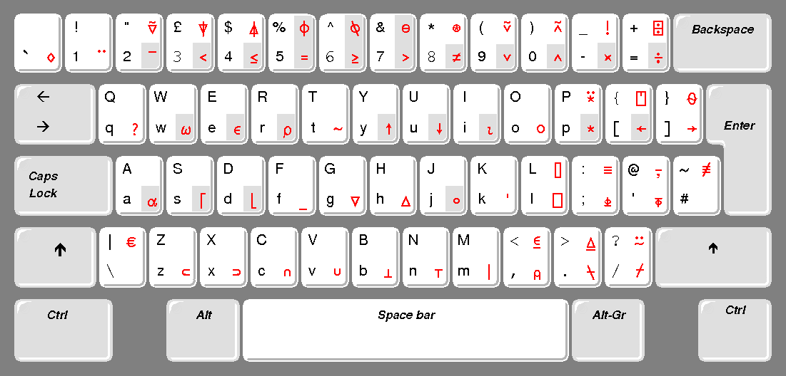

Questions:
Can someone confirm Dyalog APL now has \(17\) operators? The original text says \(10\). Here’s the operators I’m counting:
/\⌿⍀ ¨⍨⍣.∘⍤⍥@ ⍠⌸⌺⌶ &.How pedantic should I be with small table-like sections that are formatted with alignments in the original text? E.g. right in the beginning of the “Let’s Write Our First Programs” section I split the table-like section in a small enumeration with the code inputs or after that, the explanation of the dfn I wrote as a simple enumeration;
Sort of a meta question, but how much freedom do I have to rewrite little portions of the text? Cf.
the questions below;
the first paragraph of the “Simple Operations” sub sub-section, which I changed a bit because the book is now being written in a Jupyter notebook;
the table just before the section on reduction;
Should we go with “double click” or “double-click”? This chapter uses both;
Can I use lowercase after a colon? I.e. instead of “[…] about them here: We won’t […] ” have “[…] about them here: we won’t […] “.
Should chapter titles be Camel Cased or should they be written in standard English? First letter is upper case and the remainder is lower cased by default?
Can I use MathJax around numbers embedded in the text? Or should I transcribe them to English? Or should I leave them as-is? E.g. last sentence of the first paragraph here.
Can I replace the PASCAL example code with Python code at the end of the “Array Processing” section? PASCAL is so old…
on a related note, in the Indexing section the author says many languages use () for indexing instead of []; I’d like to update the sentence to say using [] is like many other programming languages.
For aligned text should I use LaTeX tables or Markdown arrays/alignat environments? Cf. this example.
Notes:
May want to update the “There Is a Lot to Discover Yet” on GUIs;
May want to update the examples given of APL in real companies;
…
Introduction - Will You Play APL With Me?¶
Will You Follow Us?¶
We would like to have you discover a new land, a land where people who may or may not be specialists in programming can process their data, build computerised applications, and take pleasure in using a programming language which is an extremely elegant and powerful tool of thought.
Beware: Dyalog APL is Addictive!¶
Among the hundreds of programming languages which have been created, most of them share the same fundamentals, the same basic unstruction set, approximately the same functions, and by and large the same methods to control the logic of a program. This greatly influences the way people imagine and build solutions to computing problems. Because the languages are so similar, the solutions are similar. Does it mean that these are the only ways of solving problems? Of course not!
Dyalog APL is there to open doors, windows, and minds, prove that original new methods do exist, and that matehmatics is not limited to four basic operations. Using APL will expand and extend the range of mental models that you use to solve problems, but beware:
Once you are hooked on APL, there is a real risk that you will no longer accept the limitations of “traditional” programming languages.
Installation and Keyboard¶
If you do not have access to a computer with Dyalog APL installed, you should still be able to gain an appreciation of the language from these pages and, we hope, enjoy the experience.
If you have installed Dyalog, not only can you read this book, but you can also experiment on your own computer using the examples below, and invent your own data and calculations.
If you have a copy of Dyalog APL, install it as explained in the User Guide. Just run the installation program and accept all the defaults; there is no need to change anything.
You might like to refer to section A-1 for additional installation hints.
As you will see in the following pages, APL uses special symbols, like ⍉, ⍴ and ↓, which you enter using a special keyboard layout.
You will not need all of the special symbols to read the following pages. The picture below illustrates a cut-down version of the UK keyboard layout, with only the APL symbols that are referred to in this introduction. They are shown on a grey background. The US keyboard is slightly different, but the symbols we need are positioned identically. The full keyboard layout is shown in the User Guide.

Here is how the keyboard is to be used:
All the standard English letters, numerals and symbols are typed as usual.
The majority of the APL symbols are obtained by pressing the “Ctrl” key, in conjunction with another key. For example, to obtain
⍴, you must press Ctrl and R. From now on, this keystroke will be identified as “Ctrl + R”. On the keyboard layout illustrated above, the symbols that you enter this way are printed at the bottom-right corner of each key.Most other APL symbols are obtained by simultaneously pressing “Ctrl” and “Shift” and then the appropriate key. For example, to obtain
⍉, you must press Ctrl and Shift and 6. From now on, this keystroke will be identified as “Ctrl+Shift+6”. On the keyboard layout illustrated above, the symbols that you enter this way are printed at the top-right corner of each key.A few APL symbols are obtained by pressing the “Alt Gr” key (or Ctrl+Alt if your keyboard does not have an “Alt Gr” key), simultaneously with another key, but you don’t have to bother about them here: we won’t be using them in the examples in this introduction.
In case you initially have any difficulty with the keyboard, there is a “language bar” on top of the sessio nscree, with all the APL symbols on it. When you need a symbol, you just have to click on it and the symbol will appear wherever your cursor is positioned.
You may notice that some symbols appear twice on the keyboard. This is the case for the symbols < = >. These symbols are all part of a normal keyboard (the black ones), but they have been repeated on the APL keyboard, mostly in order to group the symbols used for comparison functions together (the red ones). Do not worry: no matter which key you use to produce one of the duplicated symbols, you’ll obtain the same result.
Utilities and Data¶
For most of the examples, you can just type what you read in the following pages, but sometimes you will need some data which we have prepared for you.
This data is contained in a special file (called a workspace) named DyalogTutor_EN.dws which accompanies this book.
If you don’t have the file, please refer to section A-1 for instructions on how to download it.
The file can only be opened by Dyalog APL. You can open it as follows:
In Windows Explorer, double-click on the file’s name. APL will be started, and it will then open the file.
Or, start APL by double clicking on the Dyalog APL icon. The, using the “
File/Open” menu, search for the file and open it.Alternatively, you can use an APL command to load it into the session, like shown below:
⎕load 'res/DyalogTutor_EN.DWS'
Once the workspace has been loaded, a welcome message is displayed (the message you can see above), and you can check that the workspace contains the variables we shall be using in the following pages:
)vars
You can display the contents of any variable by hovering over its name with the mouse-pointer, by double-clicking on its name, or just by typing its name and pressing the Enter key, like this:
Forecast
Our First Steps into APL’s Magic World¶
Simple Operations¶
In the APL session, what you type starts 6 characters right from the left marget (we say it is “indented”), whereas the computer’s response begins at the left margin. For additional clarity, in the following pages the characters typed by the user are in a grey background and are preceeded by a In [X]: annotation, the response given by the computer being in a white background and preceeded by a corresponding Out[X]: annotation.
You will notice that in the examples given in the book we very often put a blank space between a symbol and the surrounding names or values. This is unnecessary in most cases; we only do so in order to improve readability. Later on, we will gradually cease to insert the blank spaces in expressions that you should become familiar with along the way.
An expression gets evaluated and the result shown in the session when you press the Enter key. Let’s try some simple expressions:
27 + 53
1271 - 708
86 ÷ 4 ⍝ The Divide sign is obtained using Ctrl+=
59 × 8 ⍝ The Multiply sign is obtained using Ctrl+-
You can see that APL behaves like any hand-held calculator with, however, a small difference; multiplication is represented by the multiplication symbol (×) which is used in schools in many countries; likewise for division (÷).
In most other computer languages, a star * is used for Multiply and / for Divide. This is a legacy of the early days of computers, when the character set was limited to the one available on a typewriter. At the time it was decided to use * and / in place of × and ÷. But it is now possible to display any type of symbol on a screen and on a printer, and this transposition is no longer justifyable. The use of common symbols, which are taught all over the world, aids the understanding of APL by non programmers.
If you are familiar with other programming languages, you may occasionally and erroneously use * instead of ×. Let’s see what might happen then:
7 * 3 ⍝ In APL the star means "Power"
⍝ so that 7*3 is equivalent to 7×7×7
Variables¶
As in any programming language, it is possible to create variables. Just choose a name and use the left arrow to assign it a value. In APL a numeric value can consist of a single number, or several numbers separated by at least one blank space. The arrow can be obtained using Ctrl+[
VAT ← 19.6 ⍝ Read it as: VAT gets 19.6
Years ← 1952 1943 1986 2007
The names are “case sensitive”. It means that three variables named respectively VAT, Vat and vat, would be distinct, and may contain different values.
To ask for the contents of a variable, just type its name and press Enter, like this:
VAT
Years
Array Processing¶
APL is able to operate on two sets of numbers, provided those two sets have the same “shape”. For the moment, understand this as “the same number of items”. For example, suppose that you have a list of prices of \(5\) products, and the quantity bought of each:
Prices |
5.20 |
11.50 |
3.60 |
4.00 |
8.45 |
Quantities |
2 |
1 |
3 |
6 |
2 |
You can create two variables like this:
Price ← 5.2 11.5 3.6 4 8.45
Qty ← 2 1 3 6 2
When multiplied together, the variables are multiplied item by item, and produce a result of the same length. That result can be assigned to a new variable.
Costs ← Price × Qty
Costs
This array processing capability eliminates most of the “loops” which are common to other programming languages. This remains true even if the data is not a simple list but a multi-dimensional array, of almost any size and number of dimensions.
To make it clear, imagine that a Sales Director makes forecasts for sales of \(4\) products over the coming \(6\) months, and assigns them to the variable Forecast. At the end of the \(6\) months, he assigns the real values to the variable Actual. Here they are:
Forecast
Actual
We have not yet explained how you can build such arrays of data, but if you have APL installed, these variables are provided in the workspace file named “DyalogTutor_EN.dws”. Refer to the “Utilities and Data” section above to see how you can load the workspace and access the data.
It is clear that the first idea of any Sales Director will be to ask for the differences between what he expected and what he has really got. This can be done easily by typing:
Actual - Forecast ⍝ Note that to distinguish the sign attached to
⍝ negative values from subtraction, negative
⍝ values are shown with a high minus sign.
To enter negative values, the high minus sign can be obtained by pressing Ctrl+\(2\).
In most traditional programming languages, an operation like the one above requires two embedded loops. See what is needed in Python:
for i in range(4):
for j in range(6):
diff[i][j] = actual[i][j] - forecast[i][j]
Even if this may seem obvious to a programmer, it is worth noting that most of the code has nothing to do with the user requirement. The only important thing (subtract forecasts from actual values) is hidden behind the detailed working of the computer program.
To have a calculation done by a machine, one must translate our human wording into something that the computer can understand. With traditional languages, most of the effort is made by the man, to produce a program like the Python example above. The great advantage of APL is that the man has generally much less effort ot make, and the machine does the rest.
We have seen that APL will work on two variables of the same shape; it also works if one of the variables is a single item, which is called a scalar. If so, the other variable may be of any shape.
For example, if we want to calculate the amount of \(19.6\%\) VAT applied to the variable Price above, we can type Price × VAT ÷ 100 (or VAT × Price ÷ 100 as well), as shown here:
Price × VAT ÷ 100 ⍝ This result would require some rounding
⍝ but this is not important for now
More Symbols¶
Most programming languages represent only a very small subset of the mathematical functions using symbols (typically +, -, * and /). The creator of APL, Kenneth E. Iverson, chose to include many traditional mathematical symbols in his language, and also added some new symbols to the set that we already know so well.
E.g.: Many functions which in other programming languages are library routines with names like “Maximum” have their own symbols in APL.
The function “Maximum” (⌈) returns the greater of two numbers, or of two arrays of numbers compared item by item.
There is also, as one might expect, a symbol for “Minimum” (⌊).
75.6 ⌈ 87.3 ⍝ Maximum (Ctrl+S)
11 28 52 14 ⌈ 30 10 50 20 ⍝ Comparison item by item
11 28 52 14 ⌊ 20 ⍝ Minimum (Ctrl+D)
APL supports about \(70\) symbols. Since some symbols have more than one meaning one could argue at length about the exact number.
This is nothing to worry about: Some of the symbols are familiar, such as × or > or again ÷ and -, but also ! and a good many others.
Most Symbols Have a Double Meaning¶
This is not a peculiarity of APL; in algebra we are familiar with the use of symbols as common as the minus sign being used in two different ways.
$$
\begin{array} {lll}\text{In the expression} & a = x - y & \text{the minus sign means subtract} \ \text{Whereas in} & a = -y & \text{the minus sign indicates the negation of \(y\), that’s different.} \ \end{array} $$
$$ \begin{alignat}{3} &\text{In the expression}\quad &&a = x - y\quad &&&\text{the minus sign means subtract} \ &\text{Whereas in} &&a = -y &&&\text{the minus sign indicates the negation of \(y\), that’s different} \end{alignat} $$
In the expression |
\(a = x - y\) |
the minus sign means subtract |
Whereas in |
\(a = -y\) |
the minus sign indicates the negation of \(y\) |
The first form is called the “dyadic” use of the symbol. The second form is called the “monadic” use of the symbol.
It is the same in APL, where most of the symbols can have two meanings.
For example, to find the shape (the dimensions) of an array, one uses the Greek letter Rho (⍴), which can be read “shape of …”, in its monadic use. It is produced using Ctrl+R.
⍴ Price ⍝ Monadic use
⍝ Price has 5 items
⍴ Forecast ⍝ Forecast has 4 rows of 6 items
Used dyadically, the same symbol will organize items into a specified shape. For example, suppose that we want to create the matrix below:
We must give the computer two pieces of information:
First the shape to give to the matrix:
4 2(\(4\) rows of \(2\) columns)Next the contents of the matrix:
25 60 33 47 11 44 53 28
It is the symbol ⍴ (Rho) which makes the connection between shape and the contents:
Tab ← 4 2 ⍴ 25 60 33 47 11 44 53 28
Tab
A new variable Tab is thereby created, and this is also how the variables Forecast and Actual above were made.
Conventions¶
In APL, we give special names to certain shapes of data:
Scalar |
is used for a single value, a number like |
Vector |
is a plain list of values. It may be composed of numbers like |
Array |
is a generic word for any set of values, whatever the number of its dimensions (whatever its shape). |
Matrix |
is an array with \(2\) dimensions, like |
Table |
is another common word used for arrays with \(2\) dimensions (matrices). |
Cube |
is a common word used for arrays with \(3\) dimensions. |
Reduction Unifies Traditional Notations¶
Perhaps you remember the variable Costs:
Costs
So what must we do to work out the total? Mathematicians are creative people who long ago devised the symbol \(\sum\), always with a pretty collection of indices above and below, which make it complex to understand and to type on a typewriter.
In APL, the operation is written like this:
+/ Costs
Simple, isn’t it? This gives the total of all the items of the array.
You can read this ias “Plus Reduction” of the variable Costs.
To gain a better understanding of the process:
When we write an instruction such as
+/ 21 45 18 27 11it works as if we had written
21 + 45 + 18 + 27 + 11and we obtain the sum
122.
In fact, it works as if we had “inserted” the symbol + between the values.
But then, if we write
×/ 21 45 18 27 11it works as if we had written
21 × 45 × 18 × 27 × 11so, we get the product
5051970.
Similarly, if we write
⌈/ 21 45 18 27 11it works as if we had written
21 ⌈ 45 ⌈ 18 ⌈ 27 ⌈ 11so, we obtain the largest term
45.
Reduction, represented by the symbol /, belongs to a special category of symbols called “Operators”. All the other symbols (+ - × ⌈ ⍴ ⍉ …) are called “Functions” (addition, subtraction, multiplication, maximum, shape, etc.).
The arguments of a function are data (arrays):
Price × Qty
Whereas at least one of the arguments of an operator is a function:
+/ Qty
The left argument of Reduction can be one of many of the APL symbols, and it can also be the name of a user-defined program. This may give you an idea of the generality and power of the concept.
Dyalog APL contains \(17\) such powerful operators. If that is not enough, you can even write your own operators, just like you can write your own functions!
Let’s Write Our First Programs¶
Imagine that we want to calculate the average of the following numbers:
Val ← 22 37 41 19 54 11 34
We must:
first calculate the sum of the values:
+/ Val
next calculate the number of values:
⍴ Val
and finally divide one result by the other.
The calculation can be written as the single formula:
(+/Val) ÷ (⍴Val)
As it is quite likely that we shall often want to make this sort of calculation, it is preferable to store this expression in the form of a program.
In APL we prefer the name defined function to the name “program”.
Defined functionsmay be used in the same way as the built-in functions represented by special symbols like + - × ÷ > ⍴ …, which are called primitive functions.
To define a simple function like this one, here is the easiest way:
Average ← {(+/⍵)÷(⍴⍵)}
Averageis the program name;⍵is a generic symbol which represents the array passed on the right;⍺would be the generic symbol for the array passed on the left, if any.
The definition of the function is delimited by a set of curly braces { and }. For more complext functions it is also possible to use a text editor, but this is beyond the scope of this short introduction.
Once defined, this function may be invoked in a very simple way:
Average Val ⍝ For execution, ⍵ will get the values
⍝ contained in Val
Average 12 74 56 23
Let us also write two little dyadic functions, the left argument of which is ⍺, and the right is ⍵:
Plus ← {⍺+⍵}
Times ← {⍺×⍵}
(3 Plus 6) Times (5 Plus 2)
As you can see, these functions behave exactly as if we had written (3+6) × (5+2).
We said in the preceding section that a user-defined program could be used by the Reduce operator; let us try:
Plus/ Val ⍝ It works!
Indexing¶
Returning to our vector of numbers Val:
Val
In order to extract the \(4^\text{th}\) item, we just write:
Val[4]
This is similar to many other programming languages, although some use parentheses instead of brackets.
What is new is that one can extract several items in one instruction.
Val
Val[2 4 7 1 4] ⍝ One may extract the same item twice or more
And of course, in the same way, one may modify one or more items of Val using their indexes. Naturally, one must provide as many values as there are items to modify, or a single value for all:
Val[3 5 1] ← 0
Val
Val[3 5 1] ← 300 77 111
Val ⍝ You can check that the 3rd item is now 300,
⍝ the 5th is 77, etc.
It is often necessary to extract the first few items from a list of values, for example the first \(5\). Nothing could be easier:
Val[1 2 3 4 5]
But if one needs to extract the first \(500\) items from a long list, typing the integers from \(1\) to \(500\) would of course be very inconvenient.
This is why APL has been given the symbol ⍳ (Iota), which produces the set of the first \(n\) integers (⍳ can be obtained using Ctrl+I).
This, instead of writing 1 2 3 4 5 6 7 8, it is sufficient to write ⍳8.
And to extract the first \(500\) terms of a large vector, one may write: Big[⍳500].
We shall discover later an even simpler method.
Calculating Without Writing Programs¶
The employees of a company are divided into three hierarchical categories, denoted simply \(1\), \(2\) and \(3\). One assigns to two variables the salaries and the categories of these employees, as shown here:
Salaries
Categories
Do they never want to increase these salaries? (what has our poor world come to!).
A rumour reaches us about their plans: They want a different percentage increase for each category, according to the following scale:
Category |
Suggested increase |
|---|---|
\(1\) |
\(8\%\) |
\(2\) |
\(5\%\) |
\(3\) |
\(2\%\) |
How much is this going to cost the company?
We create a variable containing the above three rates:
Rates ← 8 5 2 ÷ 100 ⍝ APL allows us to divide three numbers
⍝ by a single one
Rates
The first employee is in category \(3\), so the rate that applies to him is:
Rates[3]
It follows that the first \(5\) employees, being in categories 3 1 3 2 2 respectively, are entitled to the following increases:
Rates[3 1 3 2 2]
More generally, the rates applied to all of our employees could be obtained like this:
Rates[Categories]
Having the rates, one just has to multiply by the salaries to obtain the individual increases:
Salaries × Rates[Categories]
Finally, by adding them all, one will know how much it will cost the company:
+/ Salaries × Rates[Categories]
You may note that:
The expression remains valid whatever the number of employees or categories;
the result has been obtained without writing any program;
and this expression can be read as the simples possible English, like this:
Sum the Salaries multiplied by Rates according to Categories
Clever, no?
This illustrates how the expression of a solution in APL can be very close to the way that the solution could be phrased in everyday language. This also shows clearly that the ways of reasoning induced by traditional programming languages are not the only possible ones. This difference and originality, introduced by APL, are among the major features of the language.
Friendly Binary Data¶
APL makes much use of binary data. It is most often created by means of relational functions like = or >, which give the answer 1 or 0, depending on whether the relation is true or not:
Salaries > 3000
Actual > Forecast ⍝ One can see the favourable results instantly
APL offers the conventional mathematical form of the \(6\) relational functions:
< ≤ = ≥ > ≠Naturally one can operate on this binary data using all the functions of Boolean algebra, and moreover, the symbols used are those familiar to mathematicians of all nationalities around the world:
Function AND is represented by the symbol
∧(represented by the word AND or the symbol&&in many programming languages);Function OR is represented by the symbol
∨(represented by the word OR or the symbol||in the same languages).
This, if I am looking for people in category \(3\) whose salary is less than \(4000\) euros, I can write:
(Categories = 3) ∧ (Salaries < 4000)
In fact, APL offers all the functions of Boolean algebra, including some perhaps less familiar functions like NOR and NAND (Not-OR and Not-AND), but they are very useful in finance and electronic automation.
There is, however, no special symbol for the function Exclusive OR (often called XOR). This is because it is not needed: The function Not Equal ≠ gives the same result as Exclusive OR when it is used with Boolean values, as you can see below:
0 0 1 1 ≠ 0 1 0 1
Finally, not only can these binary vectors be used as we have described but also for novel purposes, such as counting and selecting.
Counting¶
Having found which salaries are less than \(2500\) euros by means of the following expression:
Salaries < 2500
It is easy to add all the \(1\)s and \(0\)s to calculate how many people earn less than \(2500\) euros:
+/ Salaries < 2500
Selection¶
One can also use the binary vector as a “mask” to select the items corresponding to the binary \(1\)s from another array:
1 1 0 1 0 0 1 / 23 55 17 46 81 82 83
The procedure is identical for character data:
1 0 1 0 0 0 0 1 1 / 'Drumstick'
This function, called Compress, is particularly useful for extracting items conforming to a given criterion from a variable. For example, to display the salaries of people in Category \(2\), one writes:
(Categories = 2) / Salaries ⍝ Powerful, isn't it?
Discovery¶
To practive our skills some more, let us find in our variable Val the positions of numbers greater than \(35\). Here are the necessary steps:
Val ← 22 37 41 19 54 11 34
Val
Val>35
⍴Val
⍳⍴Val ⍝ All possible positions
Let us compare two of these results:
Val>35
⍳⍴Val
You can see that if you eliminate (using *Compress( the items which correspond to zeros in order to retain only those corresponding to \(1\), you easily get the positions required: 2 3 5.
Thus the job may be done as follows:
(Val>35) / ⍳⍴Val
This expression is appplicable in many different situations.
Here is a similar use, but applied to character data: To find the positions of “a” within a phrase; the method is the same.
Phrase ← 'Panama is a canal between Atlantic and Pacific'
(Phrase = 'a') / ⍳⍴Phrase ⍝ You can check it!
A Touch of Modern Math¶
Proudly having found all the “a”s, we may wish to find all the vowels.
Alas, although we can write Phrase = 'a', because a vector can be compared with a single value, one cannot write Phrase = 'aeiouy'⁽¹⁾, because that would require the item by item comparison of a phrase of \(46\) letters and “aeiouy” which has only \(6\).
In other words: You may compare \(46\) letters with \(46\) other letters, or compare them with one letter, but not with \(6\).
So we shall use a new function: Membership which is represented by the symbol ∊, also used in mathematics (∊ can be obtained by pressing Ctrl+E).
The expression A ∊ B returns a Boolean result which indicates which items of the variable A appear in the variable B, wherever they may be. And it works no matter what are the shapes, the dimensions or the type (numeric or character) of A and B, a pure marvel!
⁽¹⁾ “Y” is considered to be a vowel in many European languages.
For example:
5 7 2 8 4 9 ∊ 3 4 5 6 ⍝ Only 5 and 4 are found in 3 4 5 6
'dandelion' ∊ 'garden' ⍝ The letters "lio" do not appear in "garden"
So in pursuit of our enquiry we shall write:
(Phrase ∊ 'aeiouy') / ⍳⍴Phrase
One can also use membership between a vector and a matrix, as shown below, assuming that the list of towns is a variable created earlier.
We have represented side by side the variable itself and the result of using Membership:
Towns, Towns ∊ 'aeiouy'
We can reverse the expression, but the result has always the same shape as the left argument:
'aeiouy' ∊ Towns ⍝ None of the town names contains a "y"
A Powerful Search Function¶
We have harnessed a very useful method to look for the positions of letters or numbers in a vector, but the answer obtained does not provide a one to one correspondence between the search values and the resultant positions:
List ← 15 40 63 18 27 40 33 29 40 88 ⍝ Vector of values
Where ← 29 63 40 33 50 ⍝ We want to find these
(List ∊ Where) / ⍳⍴List ⍝ Let's apply our method
⍝ Positions found:
The positions are correct, but \(29\) is not in position \(2\), and \(40\) is not in position \(6\).
The question we have answered using the expression above is: “In which positions in List do we find a number that also appears somewhere in Where?”
If we want to answer the slightly different question: “Where in List do we find each number in Where?” we need to use a different method.
This new method uses the dyadic form of the symbol ⍳ (Iota).
List ← 15 40 63 18 27 40 33 29 40 88 ⍝ Same vector of values
Where ← 29 63 40 33 50 ⍝ Where are these?
List ⍳ Where ⍝ New method using dyadic ⍳
⍝ Positions found:
It is true that \(29\), \(63\), \(40\) and \(33\) occur respectively in positions \(8\), \(3\), \(2\) and \(7\). It’s much better!
But, first surprise: The value \(40\) occurs \(3\) times in List, but only the first one is reported in the result. This is because, by definition, dyadic Iota returns only the first occurrence of a given item. If the response for each value sought has to match a position; how may one, fooking for \(5\) numbers, obtain \(7\) results?
Second surprise: The value \(50\) is reported as being found in position \(11\) in a vector comprising only \(10\) items! This is how the function IndexOf (dyadic ⍳) reports that a value is absent.
At first sight this seems a bit surprising, but in fact it is a property which makes this function so generally powerful, as we shall soon see.
An Example¶
A car manufacturer decides that he will offer his customers a discount on the catalogue price (you can see how this example is imaginary!).
The country has been divided into \(100\) areas, and the discount rate will depend on the area according to the following table:
Area |
Discount |
|---|---|
\(17\) |
\(9\%\) |
\(50\) |
\(8\%\) |
\(59\) |
\(6\%\) |
\(84\) |
\(5\%\) |
\(89\) |
\(4\%\) |
Others |
\(2\%\) |
The problem is to calculate the discount rate that may be claimed for a potential customer who lives in a given area D; for example
D ← 84
Let us begin by creating two variables:
Area ← 17 50 59 84 89
Discount ← 9 8 6 5 4 2
Let us see if 84 is in the list of favoured areas:
D ∊ Area ⍝ Yes, it's there:
Area ⍳ D ⍝ 84 is the 4th item in the list:
Let us find the current rate of discount for this index position:
Discount[4] ⍝ This customer can claim a 5% discount; good!
One may simply write
Discount[Area⍳D]
If a customer lives in any area such as \(75\), \(45\), or \(93\), the expression Area⍳D will in all cases give the result \(6\), because those values are absent in Area. Then Discount[6] will always find the rate \(2\%\), as expected.
The importance of this approach is that it is vector-based. Suppose that publicity attracts crowds and that therefore D is no longer a single value but a vector, the solution is still valid:
D ← 24 75 89 60 92 50 51 50 84 66 17 89
Discount[Area⍳D]
All that without a program, neither “loop” nor “test”, and whatever the number of areas. Readers who know other programming languages will have no difficulty in making the comparison.
Generalisation¶
In truth, the expression we just wrote is an example of an algorithm for “changing the frame of reference”. Don’t panic, the name may seem esoteric, but the concept is simple. A list of area numbers (the initial set) is translated into a list of discount rates (the final set).
Let us now imagine the initial set to be an alphabet composed of lower case and upper case letters, and the final set to be composed of only upper case letters (with a blank space in the middle):
AlphLower ← 'abcdefghijklmnopqrstuvwxyz ABCDEFGHIJKLMNOPQRSTUVWXYZ'
AlphUpper ← 'ABCDEFGHIJKLMNOPQRSTUVWXYZ ABCDEFGHIJKLMNOPQRSTUVWXYZ*'
Notice that AlphUpper is one character longer than AlphLower. We have added an asterisk at the end, and you will see why we did so:
Here is a little French sentence, with one accented letter.
Tale ← 'Le Petit Chaperon-Rouge a bouffé le Loup'
The expression below converts from lower to upper case.
AlphUpper[AlphLower⍳Tale]
As one might expect, the characters - and é, which are absent from the initial alphabetic set have been replaced by the * of the final set, but the conversion is acceptable. This solution can easily be improved.
Once more, the rational steps to be taken to create a solution are easily translated into a programming algorithm, and the programmer can thereby get a much more extensive insight into the problem itself.
After Values, Let Us Process Shapes¶
Many traditional programming languages do not really handle arrays of numbers or characters. They hold them in memory, but when the arrays are required for processing they can only be handled one item at a time. It is not surprising in these circumstances, that these languages have only limited means of controlling the shape of the data.
It is quite the opposite in APL, which offeres many tools for working with the shape of the data. We shall only look at a few of them here.
Take and Drop¶
The functions Take (↑) and Drop (↓) serve, as their names suggest, to extract part of a set of values. Here we shall show only examples based on vectors, but all the other shapes of data can be treated in a similar way.
Recalling that
List
4 ↑ List ⍝ (Ctrl+Y)
⍝ Take the first 4 items of the vector:
5 ↓ List ⍝ (Ctrl+U)
⍝ Drop the first 5 items:
If the left argument is negative, these same functions count from the end of the vector.
¯3 ↑ List ⍝ Take the last 3 items of the vector:
¯7 ↓ List ⍝ If one drops the last 7 items, it only leaves
⍝ the first three ones:
The last result is the same as obtained by
3 ↑ List
Some pages ago, we used Big[⍳500] to extract the first \(500\) items of Big. We can now see that we also could have used 500↑Big.
Here again, using these new symbols, it is possible to create innovative solutions to classical problems.
Let us imagine a business with a turnoever which has grown over \(12\) years.
The variable Tome is Turnover in millions of euros.
Tome
We want to calculate the different between each year and the year before; how can we do it?
1 ↓ Tome ⍝ would give
¯1 ↓ Tome ⍝ would give
In other words, in each position of the first result we have “this year’s turnover” and in the same position in the second result we have “the previous year’s turnover”.
We see that all that remains is to subtract these results item by item:
(1↓Tome) - (¯1↓Tome) ⍝ Without a program or loops; all very simple!
In place of a subtraction, a division would calculate (with some obvious adjustments) the rates of growth instead of the differences:
100 × ( (1↓Tome) ÷ (¯1↓Tome) )-1
Let us put that in a small defined function, and apply it:
Growth ← {100×((1↓⍵)÷(¯1↓⍵))-1}
Growth Tome
Mirrors and Transposition¶
APL is also well equipped with functions to pivot data about any axis, as suggested by the appearances of the symbols used. They apply to both numeric and character data; as we are going to show by applying these functions to the variable Towns that we used earlier.
The symbols used hereafter are obtained like this:
⌽with Ctrl+Shift+\(5\);⍉with Ctrl+Shift+\(6\);⊖with Ctrl+Shift+\(7\).
Recall the value of the initial variable:
Towns
Left-right reversed (Mirror) with ⌽:
⌽Towns
Top-bottom reversed (Mirror) with ⊖:
⊖Towns
and rows & columns swapped (Transpose) with ⍉:
⍉Towns
And all four of them side by side for comparison:
(Towns) (⌽Towns) (⊖Towns) (⍉Towns)
The symbols used (⌽ ⊖ ⍉) are self-explanatory, no effort is required to remember any of them. They also have dyadic uses, but we shall not demonstrate them here.
Back to Primary School¶
Remember when we learned our multiplication tables? In that practically Paleolithic era, to make sure we knew all our tables, my teacher made us calculate the multiplication table for the integers \(1\) to \(9\):
You see, I haven’t forgotten!
Probably you have done all this just like me. And then we quickly forgot that very powerful tool, one which APL provides under the name Outer Product.
The task consists of taking all possible pairs of items of two vectors, (the column and row headings) and making them the left and right arguments of the function at the top left. For example, \(3\) times \(7\) gives \(21\) (in red here above).
Next we shall go on to see what we get if we change the values a little:
This operation is written as follows in APL:
5 4 10 3 ∘.× 8 5 15 9 11 40
The Outer Product symbol is made of a small circle (Ctrl+J), a dot, and the function to be applied. It is an operator, as one of its arguments is a function (× in this case) rather than an array.
Despite of its name “Outer Product” this operator by no means is restricted to working with multiplication. We can replace the symbol for Multiplication by any other dyadic function (like = < ≥ or ⌈), or even functions which you have defined yourself (like Plus), and you will understand, as for Reduce which we saw earlier, that Outer Product is an operator of amazing power.
Let’s have some fun with it:
((⍳5)∘.=(⍳5)) ((⍳5)∘.<(⍳5)) ((⍳5)∘.≥(⍳5)) ((⍳5)∘.⌈(⍳5)) ((⍳5)∘.Plus(⍳5))
A Useful Application¶
Suppose the vector Ages contains the ages of \(400\) respondents to an opinion poll. We want to establish how many people there are in each of the following categories:
\(0\) - \(25\) - \(30\) - \(35\) - \(45\) - \(50\) - \(55\) - \(65\) or above.
Here is the data:
Ages
Category ← 0 25 30 35 45 50 55 65
We are going to use the Outer Product Category ∘.< Ages, and here are the first items of the result:
If one adds up this Boolean matrix, one obtains for each row the number of people who are older than \(0\) years, older than \(25\) years, older than \(30\) years, etc. This is the expression:
cum ← +/ (Category ∘.< Ages)
cum
With the cut-down extract shown above, the value of cum would be 17 14 12 8 6 4.
In other words, there are \(12\) people older than \(30\). But among them, \(8\) are older than \(35\). In order to know how many people are between \(30\) and \(35\), it is necessary to calculate \(12 - 8\) to obtain \(4\).
If one wants to reproduce this calculation for all categories, it is necessary to perform a series of subtractions as here:
where the first line is cum, the second line is cum without its first item and followed by zero and the last line is the result as obtained by the expression cum-(1↓cum,0).
To append a zero to the right, we used a comma, which joins variables together. This is a function called Catenate.
If one no longer works with a small extract of data, but with the full list of \(400\) people, this is what one gets:
cum ← +/ (Category ∘.< Ages)
cum - (1↓cum,0)
All that without real programming, and it works whatever the number of people or categories. What a luck!
Once again, APL allowed us to find straightforward and original solutions to traditional problems.
There Is a Lot to Discover Yet¶
In the course of these pages we have flown over APL country and glimpsed certain bold ideas which explain the attraction of the language. A thousand other things remain to be seen! If you are convinced that Dyalog APL is worth the effort, you can start studying APL in much more detail in the rest of this book.
Let us just discover some additional attractive features of APL.
Attractively Simple Syntax Rules¶
Most other programming languages contain rather complex rules to determine how an expression is evaluated; a concept called operator precedence. Very often it says that for example multiplication and division have higher precedence than addition and subtraction, meaning that an expression like \(5 \times 3 + 2\) gives \(17\), because the multiplication is done first, and then the addition.
This sounds simple and familiar, but it quickly gets very complex and difficult to remember, especially in a language containing many functions, like APL. For example, which precedence should we give to ⍳ or ↓ or ⌈, for which we do not have an established tradition? And what about the functions we write ourselves?
The democratic solution adopted in APL is “We hold these truths to be self-evident that all functions are created equal!”. The only and very simple rule is that any function works on the result of the entire expression to its right, and, if it is a dyadic function, the value immediately to the left of it. As usual, parentheses can be used to group parts of an expression.
So, let us see how this applies to the expression above:
5 × 3 + 2
× works on 5 (the value immediately to the left of it) and the result of 3 + 2, the entire expression to the right of it. Even though it is not strictly correct, many people say that APL evaluates from right to left. In any case, the result of the expression is 25 in APL!
Had we written (5 × 3) + 2 instead the result would of course have been 17.
It may take a little while to get used to this slightly unfamiliar rule, but once it has been learned it is really a great advantage because you can direct your energy towards solving your problem and not have to remember complex rules just to satisfy the computer’s need for guidance.
Use Many Other Calculating Tools¶
We have discovered some original functions, which are completely absent from most other programming languages, like ⍴, ↑, ⍉, ∊ and Outer Product. Those features lead to new methods and new algorithms to process data; this is one of the main advantages of APL.
Not only do you have a lot more functions: Inner Product (generalized matrix product), many built-in mathematical tools (trigonometry, matrix inverse, conversions to and from any numerical base, etc.), but you can also handle generalized (nested) arrays; arrays which contain arrays, which themselves contain arrays, and so on.
The scope of the possible solutions to a single problem is often so wide that is is probably the reason why people never get tired of using APL: They always have something new to discover and to invent.
Create User-friendly Applications with the GUI¶
Like all modern programming languages, Dyalog APL has a Graphic User Interface (GUI) under Microsoft Windows and Win32 emulators under Unix. It allows you to design pleasant user interfaces with all the items and features you are familiar with. Even a beginner can quickly create an interface and process the data with all the power of the language, whereas in traditional languages, the same operation would need days or weeks of programming. The Microsoft.NET interface supports the use of WinForms and Windows Presentation Foundation GUI elements as well.
Access Your Data¶
Of course, Dyalog APL has built-in instructions to access data files, and SQL databases like Oracle, SQL Server, or other popular databases. These itnerfaces allow you to visualise and process part or all of a data base as if it were an array, to which you can apply all the array processing functions available in APL. That saves you a lot of heavy programming tasks.
Dyalog APL has also its own powerful fiel system. These files are collections of arrays of any shapes or sizes, which can be processed with the full power of the language. Databases built with this special feature are extremely compact (\(2\) to \(3\) times smaller than an equivalent relational database). They can be shared, and they offer much greater flexibility and superior performance compared to traditional database management systems.
Build an Efficient Partnership With Microsoft Excel¶
Microsoft Excel, probably the most popular spreadsheet manager, is used all over the world by millions of people. It appears that Excel is an easy way to enter data into a computer in a tabular form, and it is also an excellent product to produce everyday business reports and graphs.
While Excel is convenient for small business applications, it is too limited to process complex calculations, or when some operations involve data located in many workbooks.
Excel and APL can easily be combined in an efficient partnership. Excel is used to input data in a very flexible way into spreadsheets, which most users are familiar with. APL can then read dozens (and sometimes hundreds) of sheets, aggregate the data, and perform very complex calculations, which may be controlled and parameterized through the GUI interface. Of course, the results can be printed, but they can aso be output to the users in the for of specially prepared Excel worksheets. In these worksheets, the users can proceed to additional operations for their particular needs, or produce graphs of their own.
And Also…¶
You can interface APL with the Internet, write your own web server, use multithreading to process simultaneous tasks, use all the advantages of true Object Oriented Programming, and use many attractive features, which are beyond the scope of this quick survey.
FAQ¶
Perhaps you have found this language rather engaging, but before you decide to invest time and energy in developing APL applications, you would like to be sure of your choice. Let’s give you some answers.
Is Dyalog APL A Professional Tool?¶
Among many others, here are some significant examples of important applications:
Long term Board level financial planning for one of the world’s five biggest petroleum companies, used over \(12\) years.
The management of supplies required from ‘today + 2 days’ to ‘today + 3 months’, by the assembly lines of the \(6\) principal factories of a major international car manufacturer.
Risk Management for an important insurance group.
These three examples have common characteristics, positioning them as major industrial applications:
They are particularly crucial because considerable finances are at stake.
They must be absolutely reliable. A major car manufacturer works must not be brought to a stop by a programming bug.
The first two applications operate in a highly volatile business environment. As their requirements are always changing, the programs undergo constant mutation. These evolutions must be made with very short development cycles.
So we can answer: Yes, for a reasonable cost in labour, APL makes it possible to create, maintain, support and further develop large, sensitive applications of the highest level of quality, reliability, and flexibility.
Can Dyalog APL Fit a Professional Developer’s Needs?¶
The characteristics of APL make it easy to use, lead to quick development, and help to produce light and flexible code. Programs developed in APL can evolve quickly, to fit changing user requirements at will.
Because APL uses symbols rather than words to represent operations, a programmer can use any word for his own data and programs names; they will never be in conflict with the language structure and contents.
Due to its array-processing capability, APL dramatically reduces the needs for programming loops. Because all such intricacies are removed, the code is much lighter, and the programmer can concentrate all his attention and skill on the true core of computing requirements.
In many programming languages, a programmer would have to declare that each variable will be an array of such and such dimensions, containing values with a specific data type. There is nothing similar in APL. The size and the data type of a variable arise from the way in which the variable has been produced. If one extracts two rows and five columns from a matrix, the result will of course be a \(2\) by \(5\) matrix. And if we divide \(486\) into \(7\), the result will of course be a fractional value; there is no need to specify it in advance.
The extensive set of direct operations on data offered by APL leads to new approaches. For traditional problems, which have been solved in the same way in most programming languages for years, APL suddenly offers new solutions, which appear to be light, straighforward, very general, and easy to maintain because they are easy to read.
The readability of APL often surprises people who practise other programming languages; they probably forget that the languages they use are totally obscure for most non specialists. APL is learned and used efficiently by people who are not data processing professionals, but are instead specialists in their professional fields, such as accountancy, chemistry, insurance, logistics, finance and biology. They have less difficulty with APL than with the problems they have to solve, and most often, they solve them with APL. They could not achieve this alone with any other programming languages, but would require the help of programming specialists… who of course know nothing of the problem domain in question.
Where is APL Typically Used?¶
APL is typically used in situations where there is a lot to be gained if people who understand a problem can be closely involved in developing solutions. Sometimes application code is written in the afternoon by the same people who read the latest research reports or legislation in the morning - or by members of a very small team who have overlapping skills.
In a more traditional approach, in which the specialist teams would need the help of professional programmers, such teams may find that valuable information was lost in the “process”, so that several iterations would be required in order to reach a satisfactory solution. Especailly when a problem has a mathematical or technical foundation, APL can turbo-charge the development cycle.
Even if there is no immediate urgency, APL allows the path between “users and coders” to be much shorter than is the case when “traditional” technologies, in which requirement gathering, specification, architecture and coding are often handled by separate teams. If you have a novel idea that you would like to investiage (or “get to market”) quickly, you may reach your goal very much more easily by learning APL or employing a small team of APL developers (who will be able to “speak your language”), rather than becoming or using “programmers” to develop solutions for you.
APL is most widely used in the financial industry, which has a mathematical foundation, and rapidly changing requirements: In this environment, the use of APL can provide a significant competitive advantage.
Unfortunately some problems cannot wait!
Great flexibility and speed is the true commercial foundation for APL. With APL one can develop in direct contact with the users and involve them from the outset in the continual modification of the object of the development. Afterwards, as an application continues to evolve, it is still the speed of development which makes APL a tool especially well adapted to changing environments.
If you still think APL might be the very tool you need, you are ready to read the full text of the following tutorial. You will revisit some of the exames you have seen above, plus many, many others.